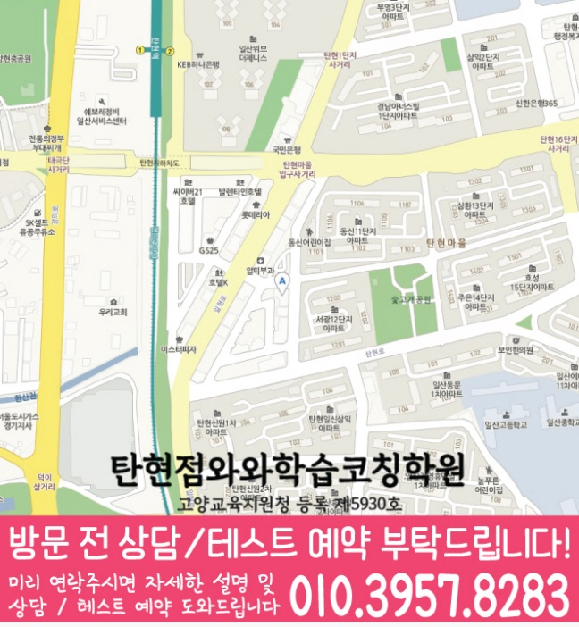

풀어보는 것보다 먼저 개념 이해도와 풀이 습관을 점검해, 어떤 단원에서 왜 막히는지 기준을 잡습니다.



LOCAL ACADEMY GUIDE
고양시 탄현동 와와학습코칭센터 고2 수학 학습 안내
경기 고양시 탄현동에서 고2 수학학원을 찾는 학생을 위해, 현재 실력 진단부터 개념 보완, 유형 학습, 오답 관리, 시험 대비까지 이어지는 학습 흐름을 안내합니다. 와와학습코칭센터는 학생별 약점과 목표(내신/수능 대비)를 확인해 수업과 코칭을 함께 진행하며 꾸준히 실력을 쌓도록 돕습니다.
탄현동 고2 수학 수업의 핵심 포인트
학교 내신 출제 경향에 맞춘 연습과, 수능형 사고력을 키우는 유형을 단계적으로 연결해 훈련합니다.
선생님 특징
계산 실수, 조건 해석, 개념 적용이 어디서 끊기는지 확인하고 필요한 연결 개념을 다시 정리해 줍니다.
틀린 문제를 재풀이만 하지 않고, 오답 원인 분류–다음 행동 처방–반복 점검으로 학습 효율을 높입니다.
수업 진행방식
1. 현재 수준 확인
고2 과정(선행/병행 여부), 학교 진도, 최근 시험 결과를 바탕으로 부족 단원과 자주 틀리는 유형을 정리합니다.
2. 개념 정리와 유형 학습
바로 문제풀이로 들어가기보다 핵심 개념을 먼저 정리하고, 기본→유형→심화 순서로 점진 연습합니다.
3. 오답 관리와 학습 피드백
오답의 원인을 계산·개념·조건·풀이전략으로 나누고, 다음 시험에서 실수하지 않도록 루틴을 설계합니다.
학년별 학습 전략(탄현동 맞춤)
초등
- 수학 기초 연산과 문제 이해 습관을 안정적으로 잡습니다.
- 중등에서 필요한 핵심 개념을 미리 준비해 반복 학습합니다.
중등
- 학교 진도에 맞춘 개념 보완과 내신 유형을 함께 반복합니다.
- 오답 패턴을 분석해 같은 실수가 다시 나오지 않게 관리합니다.
고등
- 내신 성취도와 수능형 사고력을 동시에 고려해 학습 전략을 세웁니다.
- 약한 단원 집중 보완, 시간 관리, 오답 반복 주기를 체계적으로 운영합니다.
시험 대비
- 학교별 시험 범위와 출제 경향에 맞춰 복습 계획을 재구성합니다.
- 시험 전에는 실수 유형·자주 틀리는 유형을 우선 점검합니다.
탄현동 와와학습코칭센터는 학생의 현재 상태를 바탕으로 필요한 학습을 정리하고, 상담을 통해 고2 수학 학습 방향을 더 구체적으로 안내드립니다.
센터 위치 안내
주소
경기 고양시 일산서구 산현로17번길 23 은행프라자 4
오시는 길
~ 와와학습코칭센터 탄현점 위치는 (경기 고양시 일산서구 산현로17번길 23 은행프라자 4)입니다. ✅주차장 주소: 경기도 고양시 일산서구 산현로17번길 35 탄현제2공영주차장 (간판은 아파트쪽에서 보이기 때문에 혹시 간판이 보이지 않으면 농협 간판 보고 건물 확인 해주시면 됩니다) (차량 이용 시 주차는 탄현제2공영주차장 이용 부탁드립니다) (죄송하지만 주차비는 따로 지원하고 있지 않습니다)
주요 타깃학교(이외 학교도 수업 가능)
초등 타깃학교
상탄초
중등 타깃학교
일산동중
일산중
호곡중
고등 타깃학교
일산동고
덕이고
중산고
일산동고
중산고
과목별 수강 가능 학년
국어
초4
초5
초6
중1
중2
중3
영어
초1
초2
초3
초4
초5
초6
중1
중2
중3
고1
고2
고3
수학
초1
초2
초3
초4
초5
초6
중1
중2
중3
고1
고2
고3
과학
초1
초2
초3
초4
초5
초6
중1
중2
중3
사회
수강 가능 학년 정보 준비중
학원 등록 정보
수업료는 어떻게 되나요? ✨
A - 서울 (1회 90-100분 수업기준)
| 횟수 | 초등 | 중등 | 고등 |
|---|---|---|---|
| 주 3회 | 249,000 | 266,000 | 299,000 |
| 주 4회 | 319,000 | 341,000 | 384,000 |
| 주 5회 | 389,000 | 416,000 | 469,000 |
B - 서울 외 지점 (1회 90-100분 수업기준)
| 횟수 | 초등 | 중등 | 고등 |
|---|---|---|---|
| 주 3회 | 219,000 | 236,000 | 269,000 |
| 주 4회 | 279,000 | 301,000 | 344,000 |
| 주 5회 | 339,000 | 366,000 | 419,000 |
* 수업료는 지역 및 횟수에 따라 일부 차이가 있을 수 있습니다.
고2 수학 상담부터 오답관리까지 이어지는 흐름
고2 수학은 단원 난도가 올라가고 내신과 모의고사의 풀이 방식이 달라지는 시기입니다. 상담에서는 현재 점수보다 개념 연결, 문제 해석, 오답 누적 원인을 먼저 확인합니다.
현재 수준 확인
학교 진도, 최근 시험 결과, 어려운 단원, 풀이 속도와 실수 유형을 확인합니다.
개념과 유형 진단
수학Ⅰ·수학Ⅱ 개념 이해, 조건 해석, 그래프·식 변형, 서술형 풀이 과정을 나누어 봅니다.
플래너 실행 점검
단원별 복습량, 유형 반복, 시험 범위 회독 계획을 세우고 실제 수행 여부를 확인합니다.
오답 원인 분석
틀린 문제를 개념 부족, 조건 누락, 계산 실수, 시간 부족으로 분류해 재학습으로 연결합니다.
HIGH SCHOOL MATH FAQ
고2 수학학원 FAQ
Q고2 수학은 어떤 단원부터 확인하나요?
학생의 학교 진도와 최근 시험 결과를 바탕으로 수학Ⅰ·수학Ⅱ의 개념 이해도, 유형 적용력, 오답 패턴을 먼저 확인합니다.
Q내신 대비와 모의고사 대비를 함께 할 수 있나요?
가능합니다. 학교 시험 범위를 우선으로 정리하되, 자주 틀리는 개념과 모의고사식 사고 과정을 함께 점검해 학습 균형을 맞춥니다.
Q고2 수학 오답 관리는 어떻게 진행되나요?
틀린 문제를 계산 실수, 개념 혼동, 조건 해석, 풀이 전략 부족으로 나누고 유사 유형 반복과 개념 재점검으로 연결합니다.
Q상담 전에 무엇을 준비하면 좋나요?
최근 시험지, 학교 진도, 어려운 단원, 모의고사 성적, 오답노트나 풀이 흔적을 준비하면 더 구체적인 상담이 가능합니다.
REAL PARENT REVIEWS
수강생 학부모 후기
탄현동 고2 수학학원 정보를 확인하신 학부모님들이 참고할 수 있는 실제 학습 후기입니다.
학생들이 안전하게 다닐 수 있도록 관리해 주십니다.
아이의 실력에 맞춰 수업을 진행해 주셔서 학습 효과가 높았습니다.
단기간의 점수보다 올바른 공부 방법을 알려주셔서 좋았습니다.
수업과 상담 모두 세심하게 진행되어 만족하고 있습니다.
학부모가 놓치기 쉬운 부분까지 세심하게 안내해 주셨습니다.
학습 결과가 좋지 않을 때 원인을 함께 찾아주셔서 도움이 되었습니다.
탄현동 관련 학원 페이지
현재 보고 있는 지역 안에서 센터 안내와 학년·과목별 상세 페이지로 바로 이동할 수 있습니다.
탄현동 고2 수학학원 상담이 필요하신가요?
고2 수학의 현재 단원 이해도, 내신 대비 계획, 오답 패턴을 정리해 상담문의로 남겨주시면 학습 방향을 더 구체적으로 확인할 수 있습니다.
상담문의